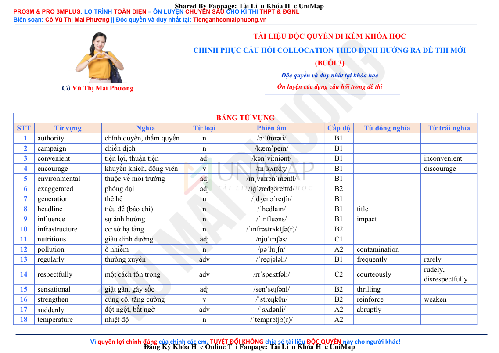
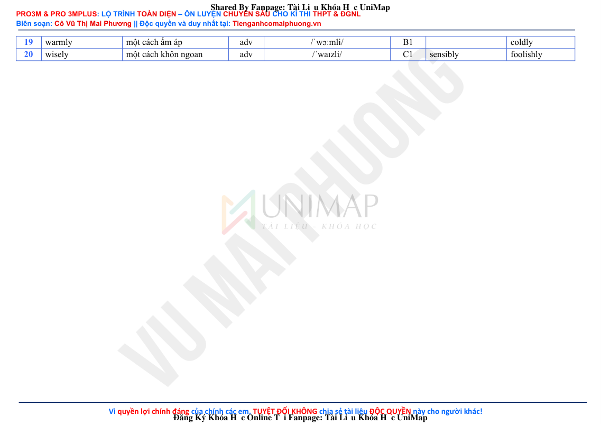
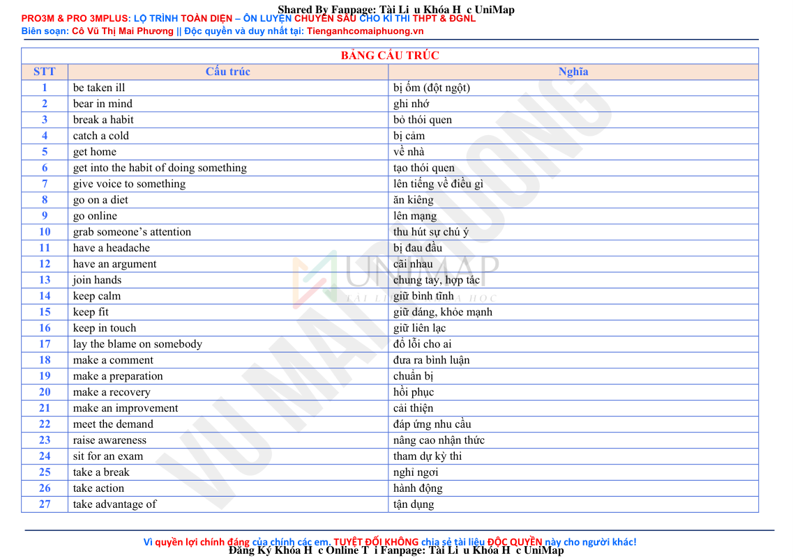
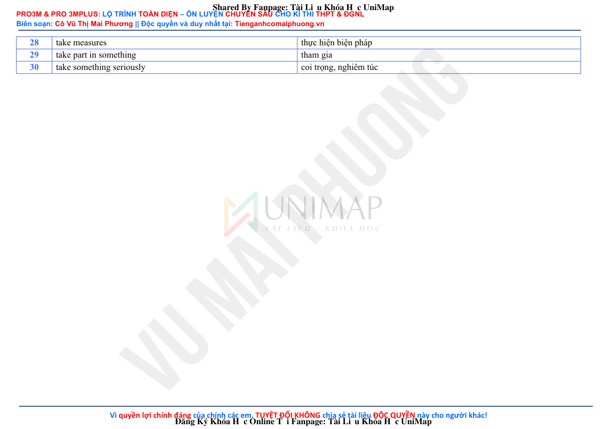
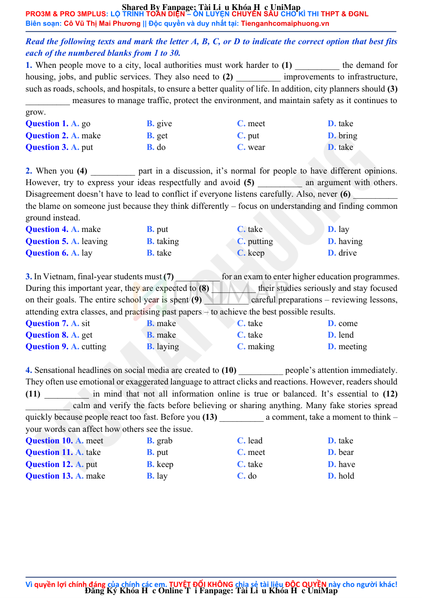
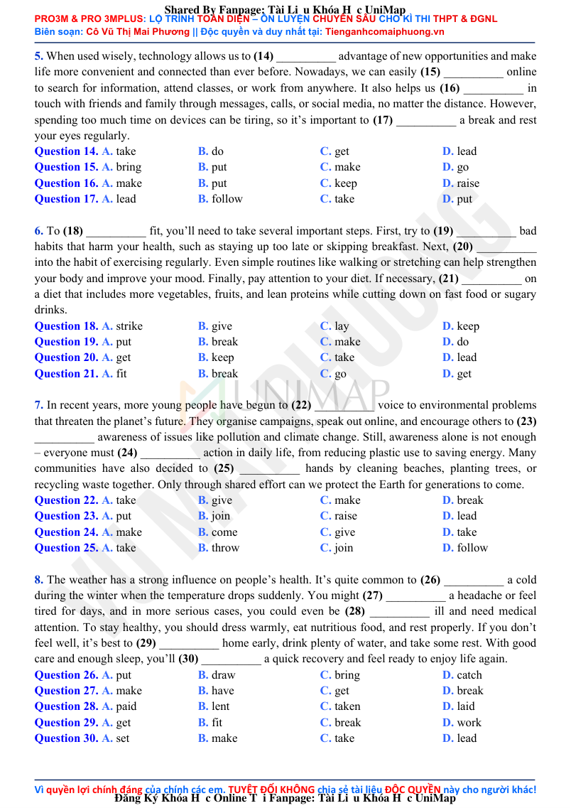

MP/CÁC DẠNG CÂU HỎI TRONG ĐỀ THI/COLLOCATION/Chinh phục câu hỏi Collocation theo định hướng ra đề thi mới (Buổi 3).pdf. Exact extracted rows from this file: 0.| Page | Text chars | Detected markers | Question words | Preview |
|---|---|---|---|---|
| 1 | 1924 | 0 | 0 | PRO3M & PRO 3MPLUS: LỘ TRÌNH TOÀN DIỆN – ÔN LUYỆN CHUYÊN SÂU CHO KÌ THI THPT & ĐGNL Biên soạn: Cô Vũ Thị Mai Phương || Độc quyền và duy nhất tại: Tienganhcomaiphuong.vn Vì quyền lợi chính đáng của chính các em. TUYỆT ĐỐI KHÔNG chia sẻ tài liệu ĐỘC QUYỀN này cho người khác! Cô Vũ Thị Mai Phương TÀI LIỆU ĐỘC QUYỀN ĐI KÈM KHÓA HỌC CHINH PHỤC CÂU HỎI COLLOCATION THEO ĐỊNH HƯỚNG RA ĐỀ THI MỚI (BUỔI 3) Độc quyền và duy nhất tại khóa học Ôn luyện các dạng câu hỏi trong đề thi |
| 2 | 594 | 0 | 0 | PRO3M & PRO 3MPLUS: LỘ TRÌNH TOÀN DIỆN – ÔN LUYỆN CHUYÊN SÂU CHO KÌ THI THPT & ĐGNL Biên soạn: Cô Vũ Thị Mai Phương || Độc quyền và duy nhất tại: Tienganhcomaiphuong.vn Vì quyền lợi chính đáng của chính các em. TUYỆT ĐỐI KHÔNG chia sẻ tài liệu ĐỘC QUYỀN này cho người khác! 19 warmly một cách ấm áp adv /ˈwɔːmli/ B1 coldly 20 wisely một cách khôn ngoan adv /ˈwaɪzli/ C1 sensibly foolishly Shared By Fa |
| 3 | 1373 | 0 | 0 | PRO3M & PRO 3MPLUS: LỘ TRÌNH TOÀN DIỆN – ÔN LUYỆN CHUYÊN SÂU CHO KÌ THI THPT & ĐGNL Biên soạn: Cô Vũ Thị Mai Phương || Độc quyền và duy nhất tại: Tienganhcomaiphuong.vn Vì quyền lợi chính đáng của chính các em. TUYỆT ĐỐI KHÔNG chia sẻ tài liệu ĐỘC QUYỀN này cho người khác! BẢNG CẤU TRÚC STT Cấu trúc Nghĩa 1 be taken ill bị ốm (đột ngột) 2 bear in mind ghi nhớ 3 break a habit bỏ thói quen 4 catch a cold bị cảm 5 get home về nhà 6 get into the habit of doing so |
| 4 | 526 | 0 | 0 | PRO3M & PRO 3MPLUS: LỘ TRÌNH TOÀN DIỆN – ÔN LUYỆN CHUYÊN SÂU CHO KÌ THI THPT & ĐGNL Biên soạn: Cô Vũ Thị Mai Phương || Độc quyền và duy nhất tại: Tienganhcomaiphuong.vn Vì quyền lợi chính đáng của chính các em. TUYỆT ĐỐI KHÔNG chia sẻ tài liệu ĐỘC QUYỀN này cho người khác! 28 take measures thực hiện biện pháp 29 take part in something tham gia 30 take something seriously coi trọng, nghiêm túc Shared By Fanpage: Tài Liệu Khóa Học UniMap Đăng Ký Khóa Học Online Tại Fanpage: |
| 5 | 3032 | 43 | 1 | PRO3M & PRO 3MPLUS: LỘ TRÌNH TOÀN DIỆN – ÔN LUYỆN CHUYÊN SÂU CHO KÌ THI THPT & ĐGNL Biên soạn: Cô Vũ Thị Mai Phương || Độc quyền và duy nhất tại: Tienganhcomaiphuong.vn Vì quyền lợi chính đáng của chính các em. TUYỆT ĐỐI KHÔNG chia sẻ tài liệu ĐỘC QUYỀN này cho người khác! Read the following texts and mark the letter A, B, C, or D to indicate the correct option that best fits each of the numbered blanks from 1 to 30. 1. When people move to a city, local authorities must work harder |
| 6 | 3558 | 55 | 0 | PRO3M & PRO 3MPLUS: LỘ TRÌNH TOÀN DIỆN – ÔN LUYỆN CHUYÊN SÂU CHO KÌ THI THPT & ĐGNL Biên soạn: Cô Vũ Thị Mai Phương || Độc quyền và duy nhất tại: Tienganhcomaiphuong.vn Vì quyền lợi chính đáng của chính các em. TUYỆT ĐỐI KHÔNG chia sẻ tài liệu ĐỘC QUYỀN này cho người khác! 5. When used wisely, technology allows us to (14) __________ advantage of new opportunities and make life more convenient and connected than ever before. Nowadays, we can easily (15) __________ online to search fo |

PRO3M & PRO 3MPLUS: LỘ TRÌNH TOÀN DIỆN – ÔN LUYỆN CHUYÊN SÂU CHO KÌ THI THPT & ĐGNL Biên soạn: Cô Vũ Thị Mai Phương || Độc quyền và duy nhất tại: Tienganhcomaiphuong.vn Vì quyền lợi chính đáng của chính các em. TUYỆT ĐỐI KHÔNG chia sẻ tài liệu ĐỘC QUYỀN này cho người khác! Cô Vũ Thị Mai Phương TÀI LIỆU ĐỘC QUYỀN ĐI KÈM KHÓA HỌC CHINH PHỤC CÂU HỎI COLLOCATION THEO ĐỊNH HƯỚNG RA ĐỀ THI MỚI (BUỔI 3) Độc quyền và duy nhất tại khóa học Ôn luyện các dạng câu hỏi trong đề thi BẢNG TỪ VỰNG STT Từ vựng Nghĩa Từ loại Phiên âm Cấp độ Từ đồng nghĩa Từ trái nghĩa 1 authority chính quyền, thẩm quyền n /ɔːˈθɒrəti/ B1 2 campaign chiến dịch n /kæmˈpeɪn/ B1 3 convenient tiện lợi, thuận tiện adj /kənˈviːniənt/ B1 inconvenient 4 encourage khuyến khích, động viên v /ɪnˈkʌrɪdʒ/ B1 discourage 5 environmental thuộc về môi trường adj /ɪnˌvaɪrənˈmentl/ B1 6 exaggerated phóng đại adj /ɪɡˈzædʒəreɪtɪd/ B2 7 generation thế hệ n /ˌdʒenəˈreɪʃn/ B1 8 headline tiêu đề (báo chí) n /ˈhedlaɪn/ B1 title 9 influence sự ảnh hưởng n /ˈɪnfluəns/ B1 impact 10 infrastructure cơ sở hạ tầng n /ˈɪnfrəstrʌktʃə(r)/ B2 11 nutritious giàu dinh dưỡng adj /njuˈtrɪʃəs/ C1 12 pollution ô nhiễm n /pəˈluːʃn/ A2 contamination 13 regularly thường xuyên adv /ˈreɡjələli/ B1 frequently rarely 14 respectfully một cách tôn trọng adv /rɪˈspektfəli/ C2 courteously rudely, disrespectfully 15 sensational giật gân, gây sốc adj /senˈseɪʃənl/ B2 thrilling 16 strengthen củng cố, tăng cường v /ˈstreŋkθn/ B2 reinforce weaken 17 suddenly đột ngột, bất ngờ adv /ˈsʌdənli/ A2 abruptly 18 temperature nhiệt độ n /ˈtemprətʃə(r)/ A2 Shared By Fanpage: Tài Liệu Khóa Học UniMap Đăng Ký Khóa Học Online Tại Fanpage: Tài Liệu Khóa Học UniMap

PRO3M & PRO 3MPLUS: LỘ TRÌNH TOÀN DIỆN – ÔN LUYỆN CHUYÊN SÂU CHO KÌ THI THPT & ĐGNL Biên soạn: Cô Vũ Thị Mai Phương || Độc quyền và duy nhất tại: Tienganhcomaiphuong.vn Vì quyền lợi chính đáng của chính các em. TUYỆT ĐỐI KHÔNG chia sẻ tài liệu ĐỘC QUYỀN này cho người khác! 19 warmly một cách ấm áp adv /ˈwɔːmli/ B1 coldly 20 wisely một cách khôn ngoan adv /ˈwaɪzli/ C1 sensibly foolishly Shared By Fanpage: Tài Liệu Khóa Học UniMap Đăng Ký Khóa Học Online Tại Fanpage: Tài Liệu Khóa Học UniMap

PRO3M & PRO 3MPLUS: LỘ TRÌNH TOÀN DIỆN – ÔN LUYỆN CHUYÊN SÂU CHO KÌ THI THPT & ĐGNL Biên soạn: Cô Vũ Thị Mai Phương || Độc quyền và duy nhất tại: Tienganhcomaiphuong.vn Vì quyền lợi chính đáng của chính các em. TUYỆT ĐỐI KHÔNG chia sẻ tài liệu ĐỘC QUYỀN này cho người khác! BẢNG CẤU TRÚC STT Cấu trúc Nghĩa 1 be taken ill bị ốm (đột ngột) 2 bear in mind ghi nhớ 3 break a habit bỏ thói quen 4 catch a cold bị cảm 5 get home về nhà 6 get into the habit of doing something tạo thói quen 7 give voice to something lên tiếng về điều gì 8 go on a diet ăn kiêng 9 go online lên mạng 10 grab someone’s attention thu hút sự chú ý 11 have a headache bị đau đầu 12 have an argument cãi nhau 13 join hands chung tay, hợp tác 14 keep calm giữ bình tĩnh 15 keep fit giữ dáng, khỏe mạnh 16 keep in touch giữ liên lạc 17 lay the blame on somebody đổ lỗi cho ai 18 make a comment đưa ra bình luận 19 make a preparation chuẩn bị 20 make a recovery hồi phục 21 make an improvement cải thiện 22 meet the demand đáp ứng nhu cầu 23 raise awareness nâng cao nhận thức 24 sit for an exam tham dự kỳ thi 25 take a break nghỉ ngơi 26 take action hành động 27 take advantage of tận dụng Shared By Fanpage: Tài Liệu Khóa Học UniMap Đăng Ký Khóa Học Online Tại Fanpage: Tài Liệu Khóa Học UniMap

PRO3M & PRO 3MPLUS: LỘ TRÌNH TOÀN DIỆN – ÔN LUYỆN CHUYÊN SÂU CHO KÌ THI THPT & ĐGNL Biên soạn: Cô Vũ Thị Mai Phương || Độc quyền và duy nhất tại: Tienganhcomaiphuong.vn Vì quyền lợi chính đáng của chính các em. TUYỆT ĐỐI KHÔNG chia sẻ tài liệu ĐỘC QUYỀN này cho người khác! 28 take measures thực hiện biện pháp 29 take part in something tham gia 30 take something seriously coi trọng, nghiêm túc Shared By Fanpage: Tài Liệu Khóa Học UniMap Đăng Ký Khóa Học Online Tại Fanpage: Tài Liệu Khóa Học UniMap

PRO3M & PRO 3MPLUS: LỘ TRÌNH TOÀN DIỆN – ÔN LUYỆN CHUYÊN SÂU CHO KÌ THI THPT & ĐGNL Biên soạn: Cô Vũ Thị Mai Phương || Độc quyền và duy nhất tại: Tienganhcomaiphuong.vn Vì quyền lợi chính đáng của chính các em. TUYỆT ĐỐI KHÔNG chia sẻ tài liệu ĐỘC QUYỀN này cho người khác! Read the following texts and mark the letter A, B, C, or D to indicate the correct option that best fits each of the numbered blanks from 1 to 30. 1. When people move to a city, local authorities must work harder to (1) __________ the demand for housing, jobs, and public services. They also need to (2) __________ improvements to infrastructure, such as roads, schools, and hospitals, to ensure a better quality of life. In addition, city planners should (3) __________ measures to manage traffic, protect the environment, and maintain safety as it continues to grow. Question 1. A. go B. give C. meet D. take Question 2. A. make B. get C. put D. bring Question 3. A. put B. do C. wear D. take 2. When you (4) __________ part in a discussion, it’s normal for people to have different opinions. However, try to express your ideas respectfully and avoid (5) __________ an argument with others. Disagreement doesn’t have to lead to conflict if everyone listens carefully. Also, never (6) __________ the blame on someone just because they think differently – focus on understanding and finding common ground instead. Question 4. A. make B. put C. take D. lay Question 5. A. leaving B. taking C. putting D. having Question 6. A. lay B. take C. keep D. drive 3. In Vietnam, final-year students must (7) __________ for an exam to enter higher education programmes. During this important year, they are expected to (8) __________ their studies seriously and stay focused on their goals. The entire school year is spent (9) __________ careful preparations – reviewing lessons, attending extra classes, and practising past papers – to achieve the best possible results. Question 7. A. sit B. make C. take D. come Question 8. A. get B. make C. take D. lend Question 9. A. cutting B. laying C. making D. meeting 4. Sensational headlines on social media are created to (10) __________ people’s attention immediately. They often use emotional or exaggerated language to attract clicks and reactions. However, readers should (11) __________ in mind that not all information online is true or balanced. It’s essential to (12) __________ calm and verify the facts before believing or sharing anything. Many fake stories spread quickly because people react too fast. Before you (13) __________ a comment, take a moment to think – your words can affect how others see the issue. Question 10. A. meet B. grab C. lead D. take Question 11. A. take B. put C. meet D. bear Question 12. A. put B. keep C. take D. have Question 13. A. make B. lay C. do D. hold Shared By Fanpage: Tài Liệu Khóa Học UniMap Đăng Ký Khóa Học Online Tại Fanpage: Tài Liệu Khóa Học UniMap

PRO3M & PRO 3MPLUS: LỘ TRÌNH TOÀN DIỆN – ÔN LUYỆN CHUYÊN SÂU CHO KÌ THI THPT & ĐGNL Biên soạn: Cô Vũ Thị Mai Phương || Độc quyền và duy nhất tại: Tienganhcomaiphuong.vn Vì quyền lợi chính đáng của chính các em. TUYỆT ĐỐI KHÔNG chia sẻ tài liệu ĐỘC QUYỀN này cho người khác! 5. When used wisely, technology allows us to (14) __________ advantage of new opportunities and make life more convenient and connected than ever before. Nowadays, we can easily (15) __________ online to search for information, attend classes, or work from anywhere. It also helps us (16) __________ in touch with friends and family through messages, calls, or social media, no matter the distance. However, spending too much time on devices can be tiring, so it’s important to (17) __________ a break and rest your eyes regularly. Question 14. A. take B. do C. get D. lead Question 15. A. bring B. put C. make D. go Question 16. A. make B. put C. keep D. raise Question 17. A. lead B. follow C. take D. put 6. To (18) __________ fit, you’ll need to take several important steps. First, try to (19) __________ bad habits that harm your health, such as staying up too late or skipping breakfast. Next, (20) __________ into the habit of exercising regularly. Even simple routines like walking or stretching can help strengthen your body and improve your mood. Finally, pay attention to your diet. If necessary, (21) __________ on a diet that includes more vegetables, fruits, and lean proteins while cutting down on fast food or sugary drinks. Question 18. A. strike B. give C. lay D. keep Question 19. A. put B. break C. make D. do Question 20. A. get B. keep C. take D. lead Question 21. A. fit B. break C. go D. get 7. In recent years, more young people have begun to (22) __________ voice to environmental problems that threaten the planet’s future. They organise campaigns, speak out online, and encourage others to (23) __________ awareness of issues like pollution and climate change. Still, awareness alone is not enough – everyone must (24) __________ action in daily life, from reducing plastic use to saving energy. Many communities have also decided to (25) __________ hands by cleaning beaches, planting trees, or recycling waste together. Only through shared effort can we protect the Earth for generations to come. Question 22. A. take B. give C. make D. break Question 23. A. put B. join C. raise D. lead Question 24. A. make B. come C. give D. take Question 25. A. take B. throw C. join D. follow 8. The weather has a strong influence on people’s health. It’s quite common to (26) __________ a cold during the winter when the temperature drops suddenly. You might (27) __________ a headache or feel tired for days, and in more serious cases, you could even be (28) __________ ill and need medical attention. To stay healthy, you should dress warmly, eat nutritious food, and rest properly. If you don’t feel well, it’s best to (29) __________ home early, drink plenty of water, and take some rest. With good care and enough sleep, you’ll (30) __________ a quick recovery and feel ready to enjoy life again. Question 26. A. put B. draw C. bring D. catch Question 27. A. make B. have C. get D. break Question 28. A. paid B. lent C. taken D. laid Question 29. A. get B. fit C. break D. work Question 30. A. set B. make C. take D. lead Shared By Fanpage: Tài Liệu Khóa Học UniMap Đăng Ký Khóa Học Online Tại Fanpage: Tài Liệu Khóa Học UniMap